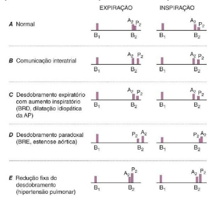
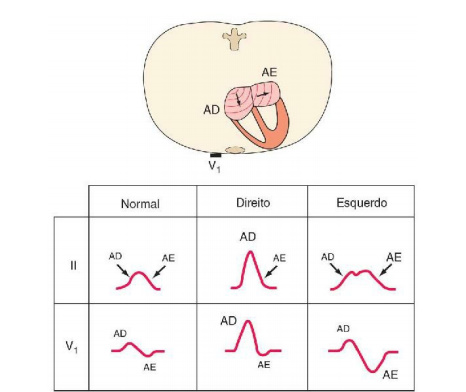

<!DOCTYPE html>
   <html lang="en">
   <head>
      <meta charset="UTF-8">
      <meta name="viewport" content="width=device-width, initial-scale=1.0">

      <!--=============== FAVICON ===============-->
      <link rel="shortcut icon" href="assets/img/favicon.png" type="image/x-icon">

      <!--=============== REMIXICONS ===============-->
      <link rel="stylesheet" href="https://cdnjs.cloudflare.com/ajax/libs/remixicon/3.5.0/remixicon.css">

      <!--=============== SWIPER CSS ===============-->
      <link rel="stylesheet" href="assets/css/swiper-bundle.min.css">

      <!--=============== CSS ===============-->
      <link rel="stylesheet" href="assets/css/styles.css">

      <title>Responsive book website - Bedimcode</title>
   </head>
   <body>
      <!--==================== HEADER ====================-->
      <header class="header" id="header">
         <nav class="nav container">
            <a href="#" class="nav__logo">
               
            </a>

             <div class="nav__menu">
               <ul class="nav__list">
                  <li class="nav__item">
                     <a href="index.html" class="nav__link active-link">
                        <i class="ri-home-2-line"></i>
                        <span>Home</span>
                     </a>
                  </li>

                  <li class="nav__item">
                     <a href="#featured" class="nav__link active-link">
                         <i class="ri-book-3-line"></i>
                        <span>Featured</span>
                     </a>
                  </li> 

                  <li class="nav__item">
                     <a href="#stetho" class="nav__link active-link">
                         <i class="ri-stethoscope-line"></i>
                        <span>Health</span>
                     </a>
                  </li>

                  <li class="nav__item">
                     <a href="#contact" class="nav__link">
                        <i class="ri-message-line"></i>
                        <span>Contact Us</span>
                     </a>
                  </li>

                  <li class="nav__item">
                     <a href="#contact" class="nav__link">
                        <i class="ri-message-line"></i>
                        <span>Contact Us</span>
                     </a>
                  </li>
               </ul>
             </div>
             <div class="nav__actions">
      <!--------------search-------------->
               <i class="ri-search-line search-button" id="search-button"></i>
      <!---------login-------------------->
               <i class="ri-user-line login-button" id="login-button"></i>
      <!---------theme button------------->
               <i class="ri-moon-line change-theme" id="change-theme"></i>
             </div>
         </nav>
      </header>

      <!--==================== SEARCH ====================-->
      <div class="search" id="search-content">
         <form action="#" class="search">
            <i class="ri-search-line search__icon"></i>
            <input type="search" placeholder="What are you looking for?" class="search__input">
         </form>

         <i class="ri-close-line search__close" id="search-close"></i>
      </div>

      <!--==================== LOGIN ====================-->
      <div class="login grid" id="login-content">
         <form action="" class="login__form grid">
            <h3 class="login__title">Log In</h3>
             
            <div class="login__group grid">
               <div>
                  <label for="login-email" class="login__label">Email</label>
                  <input type="email" placeholder="Write your email" id="login-email" class="login__input">
               </div>

               <div>
                  <label for="login-pass" class="login__label">Password</label>
                  <input type="password" placeholder="Enter your password" id="login-pass" class="login__input">
               </div>
            </div>

            <div>
               <span class="login__signup">
                  You do not have an account? <a href="#">Sign up</a>
               </span>

               <a href="#" class="login__forgot">
                  You forgot your password
               </a>

               <button type="submit" class="login__button button">Log In</button>
            </div>
         </form>

         <i class="ri-close-line login__close" id="login-close"></i>
      </div>

      <!--==================== MAIN ====================-->
      <main class="main">


         <!--==================== HOME ====================-->
<div class="home__data1">
                  <h1 class="home__title1">
                    INTRODUÇÃO ÀS DOENÇAS CARDIOVASCULARES   <br>
                           
                  </h1>

                  
                  
                  
               </div>


      <div class="accordion">
         <div>
            <input type="checkbox" name="example_accordion" id="section1" class="accordion__input">
            <label for="section1" class="accordion__label">INTRODUÇÃO ÀS DOENÇAS CARDIOVASCULARES</label>
            <div class="accordion__content">
               <p class="med__title">A MAGNITUDE DO PROBLEMA</p>
               <p>As doenças cardiovasculares abrangem as enfermidades graves mais prevalentes nos
países industrializados e representam um problema que tem crescido rapidamente nos
países em desenvolvimento. As taxas de mortalidade ajustadas para idade
por doenças coronarianas foram reduzidas em cerca de dois terços nas últimas quatro
décadas nos Estados Unidos (EUA), o que reflete a identificação e redução de fatores
de risco, assim como a melhora nos tratamentos e nas intervenções para controle de
doença arterial coronariana, arritmias e insuficiência cardíaca. Apesar disso, as
doenças cardiovasculares continuam sendo a causa mais comum de mortalidade,
responsáveis por 35% de todos os óbitos, chegando a cerca de 1 milhão de casos letais
a cada ano; cerca de 25% dessas mortes são súbitas. Além disso, as doenças
cardiovasculares têm alta prevalência, tendo sido diagnosticadas em 80 milhões de
adultos, ou 35% da população adulta.</p>
               <p class="med__title"></p>
               <p></p>
               <p class="med__title"></p>
  
 
   <p class="med__title"></p>
   <p>
   </p>

             <p class="med__title"></p>
             <p></p>
             <p></p>
             <p></p>
            </div>
         </div>

          <div>
            <input type="checkbox" name="example_accordion" id="section2" class="accordion__input">
            <label for="section2" class="accordion__label">EPIDEMIOLOGIA</label>
            <div class="accordion__content">
               <p class="med__title">EPIDEMIOLOGIA</p>
               <p></p>

               <div class="container">

    <section>
      <p>
       Durante muitos anos, a doença cardiovascular foi considerada mais comum nos
homens do que nas mulheres. Na verdade, a porcentagem de todas as mortes causadas
por doenças cardiovasculares é mais alta entre as mulheres (43%) do que entre os
homens (37%). Além disso, embora o número absoluto de mortes
secundárias à doença cardiovascular tenha diminuído entre os homens nas últimas
décadas, entre as mulheres esse número tem, na verdade, aumentado. A inflamação, a
obesidade, o diabetes tipo 2 e a síndrome metabólica parecem ter um papel mais
importante no desenvolvimento da aterosclerose coronariana nas mulheres. A doença
arterial coronariana (DAC) costuma estar mais associada à disfunção da
microcirculação coronariana nas mulheres do que nos homens. A eletrocardiografia de
esforço tem menor acurácia diagnóstica na predição de obstrução epicárdica nas
mulheres.
      </p>
    </section>

    
  
         </div>

         
            </div>


<div>
            <input type="checkbox" name="example_accordion" id="section3" class="accordion__input">
            <label for="section3" class="accordion__label">HISTÓRIA NATURAL</label>
            <div class="accordion__content">
               <p class="med__title">HISTÓRIA NATURAL</p>
               <p>As doenças cardiovasculares com frequência se manifestam agudamente, como no
indivíduo previamente assintomático que sofre infarto agudo do miocárdio,
ou no paciente previamente assintomático com miocardiopatia hipertrófica ,
ou com intervalo QT longo, cuja primeira manifestação clínica é síncope,
ou até mesmo a morte súbita. Entretanto, o médico experiente é capaz de reconhecer o
paciente com risco de evoluir com tais complicações muito antes da sua ocorrência e,
em geral, tomar medidas para a sua prevenção. Por exemplo, um paciente com infarto
agudo do miocárdio pode ter convivido com fatores de risco para a aterosclerose
durante muitos anos. Se tais fatores de risco tivessem sido reconhecidos, sua
eliminação ou redução poderia ter adiado ou prevenido o infarto. Do mesmo modo, um
paciente portador de miocardiopatia hipertrófica talvez apresentasse sopro cardíaco há
muitos anos, além de história familiar compatível com a doença. Esses achados
poderiam levar ao exame ecocardiográfico e ao reconhecimento da condição
patológica, com instituição do tratamento adequado, muito antes da ocorrência de uma
manifestação aguda grave.
Já os pacientes com doença valvar ou miocardiopatia dilatada idiopática podem
apresentar uma evolução longa com dispneia gradualmente progressiva e outras
manifestações de insuficiência cardíaca crônica pontuadas por episódios de
deterioração aguda que surgem apenas tardiamente no curso da doença. É essencial
conhecer a história natural das diversas cardiopatias de forma a aplicar as medidas
diagnósticas e terapêuticas adequadas a cada estágio da doença, assim como para
prover ao paciente e à sua família o prognóstico provável.</p>
               <p class="med__title"></p>
               <p></p>
               <p class="med__title"></p>
  
 
   <p class="med__title"></p>
   <p>
   </p>

             
         </div>


         <div>
            <input type="checkbox" name="example_accordion" id="section4" class="accordion__input">
            <label for="section4" class="accordion__label">SINTOMAS CARDÍACOS</label>
            <div class="accordion__content">
               <p class="med__title">SINTOMAS CARDÍACOS</p>
               <p>Os sintomas produzidos por cardiopatias, na maioria das vezes, são decorrentes de
isquemia miocárdica, alteração da contração e/ou do relaxamento do miocárdio,
obstrução do fluxo sanguíneo ou anormalidades na frequência ou no ritmo cardíaco. A
isquemia, causada por desequilíbrio entre oferta e demanda de oxigênio ao e pelo
miocárdio, manifesta-se com maior frequência na forma de desconforto torácico, enquanto a redução na capacidade de bombeamento do coração geralmente causa
fadiga e aumento da pressão intravascular a montante do ventrículo insuficiente. Nesse
último caso, o resultado é acúmulo anormal de líquido com edema periférico
ou congestão pulmonar e dispneia. A obstrução do fluxo sanguíneo, como
ocorre na estenose valvar, pode causar sintomas que se assemelham aos da
insuficiência miocárdica. As arritmias cardíacas com frequência surgem de
forma súbita e os sinais e sintomas resultantes – palpitação, dispneia,
hipotensão e síncope – em geral ocorrem de forma abrupta, podendo
desaparecer tão rapidamente quanto surgiram.
Embora dispneia, desconforto torácico, edema e síncope sejam manifestações
fundamentais das cardiopatias, elas também podem ocorrer em outras situações. Assim,
a dispneia pode ser observada em distúrbios tão diversos quanto doenças pulmonares,
obesidade grave e ansiedade. De forma semelhante, o desconforto torácico
pode ser produzido por diversas causas não cardíacas e cardíacas além da isquemia
miocárdica. O edema, um sinal importante nos casos com insuficiência
cardíaca não tratada ou inadequadamente tratada, também pode ocorrer nos casos com
doença renal primária e na cirrose hepática. A síncope ocorre não apenas nas
arritmias cardíacas graves, mas também em diversas doenças neurológicas.
A definição sobre tais sintomas serem ou não causados por alguma cardiopatia com
frequência poderá ser dada após um exame clínico minucioso,
complementado por exames não invasivos como eletrocardiografia em repouso e
durante exercício, ecocardiografia, radiografia e outros exames de imagem
cardíaca.
As funções miocárdica ou coronariana adequadas em repouso podem ser
insuficientes durante o exercício. Assim, a dispneia ou o desconforto torácico que
surgem durante a atividade física são característicos dos pacientes com cardiopatia,
enquanto o padrão inverso, ou seja, o desenvolvimento desses sintomas durante o
repouso e sua remissão durante o esforço, raramente é observado nesses pacientes.
Portanto, é importante questionar o paciente com cuidado acerca da relação de tais
sintomas com o esforço. </p>
               <p class="med__title"></p>
               <p>É possível que muitos pacientes com doença cardiovascular sejam assintomáticos,
tanto em repouso quanto durante esforço, mas tais pacientes podem se apresentar com
algum achado anormal ao exame físico, como sopro cardíaco, elevação da pressão
arterial ou alteração no eletrocardiograma (ECG) ou em exames de imagem. É
importante avaliar o risco global de DAC em indivíduos assintomáticos usando uma
combinação de sinais clínicos e exames subsidiários, incluindo a avaliação do
colesterol total e suas frações, além de outros marcadores biológicos como a proteína
C-reativa em alguns pacientes. Considerando que a primeira manifestação
clínica de DAC pode ser catastrófica – morte súbita cardíaca, infarto agudo do
miocárdio ou acidente vascular encefálico (AVE) em indivíduos previamente
assintomáticos –, é fundamental que se identifique aqueles que estão sob risco elevado
para tais eventos, de forma que se possa proceder a exames mais aprofundados e
instituir medidas preventivas.</p>
               <p class="med__title"></p>
  
 
   <p class="med__title"></p>
   <p>
   </p>

             
         </div>


         <div>
            <input type="checkbox" name="example_accordion" id="section5" class="accordion__input">
            <label for="section5" class="accordion__label">DIAGNÓSTICO</label>
            <div class="accordion__content">
               <p class="med__title">DIAGNÓSTICO</p>
               <p>Segundo as diretrizes da New York Heart Association (NYHA), para um diagnóstico
cardíaco completo os seguintes elementos devem ser sistematicamente considerados:</p>
               <p class="med__title"></p>
               <p class="etiologia">A etiologia subjacente <p>A doença é de origem congênita, hipertensiva, isquêmica ou
inflamatória?</p></p>
<p class="etiologia">As alterações anatômicas <p>Quais câmaras estão envolvidas? Estão hipertrofiadas,
dilatadas ou ambas? Quais valvas estão afetadas? Elas estão insuficientes e/ou
estenóticas? Há comprometimento do pericárdio? Houve infarto do miocárdio?</p></p>

<p class="etiologia">As alterações fisiológicas <p>Existe arritmia? Há evidências de insuficiência cardíaca
congestiva ou de isquemia miocárdica?</p></p>

<p class="etiologia">A incapacidade funcional <p>Qual o grau de atividade física necessária para
desencadear sintomas? A classificação produzida pela NYHA é útil para a
descrição da incapacidade funcional.</p></p>


               <p class="med__title"></p>
  
               <p>A definição de um diagnóstico cardiológico correto e completo geralmente começa
com a anamnese e o exame físico. De fato, o exame clínico permanece
sendo a base para o diagnóstico de uma ampla variedade de enfermidades. O exame
clínico pode ser complementado por cinco tipos de exames laboratoriais: ECG, exames não invasivos de imagem (radiografia de tórax, ecocardiografia,
cintilografia, tomografia computadorizada, tomografia com emissão de pósitrons e
ressonância magnética), exames de sangue para avaliação de risco
cardiovascular (p. ex., dosagens dos lipídeos e da proteína C-reativa) ou
da função cardíaca (p. ex., peptídeo natriurético cerebral [BNP]), em
alguns casos, exames invasivos especializados (p. ex., cateterismo cardíaco e
arteriografia coronariana), e testes genéticos para identificação de
doenças cardíacas monogênicas (p. ex., miocardiopatia hipertrófica,
síndrome de Marfan e anormalidades nos canais iônicos cardíacos que
levam ao prolongamento do intervalo QT com aumento do risco de morte súbita). Tais exames estão se tornando mais acessíveis</p>
 
   <p class="med__title"></p>
   <p>
   </p>

             
         </div>


        

        <div>
            <input type="checkbox" name="example_accordion" id="section7" class="accordion__input">
            <label for="section7" class="accordion__label">HISTÓRIA FAMILIAR</label>
            <div class="accordion__content">
               <p class="med__title">HISTÓRIA FAMILIAR</p>
               <p>Ao se fazer a anamnese de um paciente com doença cardiovascular conhecida ou
suspeita, deve-se dar atenção especial à história familiar. A agregação familiar é
comum em muitas formas de cardiopatia. A transmissão mendeliana de defeitos
monogênicos pode ocorrer na miocardiopatia hipertrófica, síndrome de
Marfan e morte súbita associada à síndrome do QT longo. A
doença coronariana prematura, a hipertensão essencial, o diabetes melito tipo 2 e a
hiperlipidemia (os fatores de risco mais importantes para DAC) geralmente são
distúrbios poligênicos. Embora nesses casos a transmissão familiar possa ser menos
evidente do que nas enfermidades monogênicas, a história familiar também pode ser
útil na avaliação do risco e do prognóstico</p>
               <p class="med__title"></p>
               <p></p>
               <p class="med__title"></p>
  
 
   <p class="med__title"></p>
   <p>
   </p>

             
            </div>


             <div>
            <input type="checkbox" name="example_accordion" id="section8" class="accordion__input">
            <label for="section8" class="accordion__label">AVALIAÇÃO DO COMPROMETIMENTO FUNCIONAL</label>
            <div class="accordion__content">
               <p class="med__title">AVALIAÇÃO DO COMPROMETIMENTO FUNCIONAL</p>
               <p>Quando se pretende determinar a gravidade do comprometimento funcional em um
paciente com cardiopatia, é aconselhável verificar com que frequência e intensidade
esse paciente praticava atividades físicas antes do início dos sintomas. Assim, não é
suficiente estabelecer que o paciente se queixa de dispneia. A falta de ar que surge após
o paciente ter subido rapidamente dois longos lances de escada denota
comprometimento funcional muito menos intenso que o aparecimento dos mesmos
sintomas após alguns passos em um terreno plano. Também se deve considerar o grau
de atividade física habitual, seja no trabalho, seja em atividades recreativas.
A ocorrência de dispneia em um maratonista com bom condicionamento físico após
subir dois lances de escada é muito mais significativa que o aparecimento desse
sintoma em uma pessoa previamente sedentária após subir um lance de escada.</p>
               <p class="med__title">História clínica</p>
               <p>Na
história clínica devem-se obter informações detalhadas sobre o esquema terapêutico do
paciente. Por exemplo, a persistência ou o aparecimento de edema, dispneia e outras
manifestações de insuficiência cardíaca em um paciente que esteja tomando doses
adequadas de diuréticos e outras terapias para insuficiência cardíaca é
muito mais grave que as mesmas manifestações em paciente sem tratamento. De forma
semelhante, a ocorrência de angina de peito a despeito de tratamento com doses ideais
de múltiplos agentes antianginosos é mais grave do que em paciente sem
tratamento. Para tentar determinar a evolução dos sintomas e, dessa forma, a gravidade
da doença subjacente, pode ser útil investigar quais tarefas específicas, se existirem, o
paciente era capaz de executar há seis meses ou um ano e que no presente não consegue
mais realizar.</p>
               <p class="med__title"></p>
  
 
   <p class="med__title"></p>
   <p>
   </p>

             
            </div>


               <div>
            <input type="checkbox" name="example_accordion" id="section9" class="accordion__input">
            <label for="section9" class="accordion__label">ELETROCARDIOGRAFIA</label>
            <div class="accordion__content">
               <p class="med__title">ELETROCARDIOGRAFIA</p>
               <p>Embora o ECG deva ser realizado nos pacientes com
suspeita ou diagnóstico de cardiopatia, com exceção da identificação de arritmias,
alterações da condução, hipertrofia ventricular e infarto agudo do miocárdio, esse
exame não costuma estabelecer um diagnóstico específico. O espectro de achados
eletrocardiográficos normais é amplo e o traçado pode ser significativamente afetado
por diversos fatores não cardíacos, como idade, biotipo e concentração sérica de
eletrólitos. Em geral, as alterações eletrocardiográficas devem ser interpretadas à luz
das outras alterações cardiovasculares encontradas.</p>
               <p class="med__title"></p>
               <p></p>
               <p class="med__title"></p>
  
 
   <p class="med__title"></p>
   <p>
   </p>

             
            </div>


             <div>
            <input type="checkbox" name="example_accordion" id="section10" class="accordion__input">
            <label for="section10" class="accordion__label">AVALIAÇÃO DO PACIENTE COM SOPRO CARDÍACO</label>
            <div class="accordion__content">
               <p class="med__title">AVALIAÇÃO DO PACIENTE COM SOPRO CARDÍACO</p>
               <p>A causa de um sopro cardíaco com frequência pode ser descrita
imediatamente por meio da avaliação sistemática de suas características principais,
como momento do ciclo cardíaco em que ocorre, duração, intensidade, qualidade,
frequência, configuração, localização e irradiação, interpretadas à luz da anamnese, do
exame físico geral e de outras características do exame cardíaco.</p>

               <p class="med__title"></p>
               <p>A maioria dos sopros cardíacos é mesossistólica e suave (graus I a II/VI). Quando
um sopro desses é auscultado em uma criança ou um jovem assintomático sem outrasevidências de cardiopatia no exame físico, costuma ser benigno e a ecocardiografia emgeral não é necessária. Por outro lado, indicam-se ecocardiograma bidimensional eDoppler nos pacientes com sopro sistólico intenso (graus ≥ III/VI),especialmente aqueles holo ou telessistólicos e na maioria dos pacientes com sopro diastólico ou contínuo.</p>
               <p class="med__title"></p>
  
 
   <p class="med__title"></p>
   <p>
   </p>

             
            </div>


             <div>
            <input type="checkbox" name="example_accordion" id="section11" class="accordion__input">
            <label for="section11" class="accordion__label">ARMADILHAS NA MEDICINA CARDIOVASCULAR</label>
            <div class="accordion__content">
               <p class="med__title">ARMADILHAS NA MEDICINA CARDIOVASCULAR</p>
               <p>A crescente subespecialização na medicina interna e o aprimoramento de técnicas diagnósticas avançadas em cardiologia podem levar a várias consequências indesejáveis. Como exemplos, temos os seguintes:</p>
               <P class="risco">1. O não reconhecimento por parte de médicos não cardiologistas de manifestações
cardíacas importantes de doenças sistêmicas. Por exemplo, a presença de estenose
mitral, forame oval patente e/ou arritmias atriais transitórias deve ser considerada
em paciente com AVE, assim como a possibilidade de hipertensão pulmonar e cor
pulmonale deve ser investigada em paciente com esclerodermia ou síndrome de
Raynaud. O exame cardiovascular deve ser realizado para identificar e estimar a
gravidade do comprometimento cardiovascular que acompanha os distúrbios não
cardíacos. </P>

<P class="risco">2. O não reconhecimento pelo cardiologista de distúrbios sistêmicos subjacentes nos
pacientes com doenças cardíacas. Por exemplo, a possibilidade de hipertireoidismo
deve ser considerada nos pacientes idosos com fibrilação atrial e insuficiência
cardíaca inexplicada e deve-se investigar a possibilidade de doença de Lyme nos
pacientes com bloqueio atrioventricular intermitente. Uma anormalidade
cardiovascular pode fornecer a pista-chave para o reconhecimento de algum
distúrbio sistêmico. Por exemplo, o derrame pericárdico inexplicável pode ser um
indício precoce de tuberculose ou de neoplasia.</P>

<p class="risco">3. A dependência e o uso excessivo de exames laboratoriais, em particular de exames invasivos, para avaliação do sistema cardiovascular. O cateterismo cardíaco e a
arteriografia coronariana fornecem informações diagnósticas precisas
que podem ser cruciais para o desenvolvimento de um plano terapêutico nos
pacientes com diagnóstico ou suspeita de DAC. Ainda que se tenha dado muita
atenção a tais exames, é importante reconhecer que eles são complementares e não
substituem o exame cuidadoso com técnicas clínicas não invasivas. Uma
arteriografia coronariana não deve ser realizada sem que antes tenha sido obtida
uma história meticulosa nos pacientes com dor torácica em suspeita de cardiopatia
isquêmica. Embora a arteriografia coronária possa determinar se as coronárias
estão obstruídas e em que extensão, os resultados do procedimento com frequência
não fornecem uma resposta definitiva à questão sobre a queixa de desconforto
torácico do paciente poder ser atribuída ou não à aterosclerose coronariana e sobre
haver indicação ou não de revascularização.
<p>Apesar do seu valor, os exames invasivos impõem riscos de pequena magnitude ao
paciente, envolvem desconforto, custos substanciais e sobrecarregam as instituições
médicas. Portanto, devem ser realizados apenas quando se antecipa que seus resultados
possam modificar o tratamento do paciente.</p>

</p>
               <p class="med__title"></p>
               <p></p>
               <p class="med__title"></p>
  
 
   <p class="med__title"></p>
   <p>
   </p>

             
            </div>


             <div>
            <input type="checkbox" name="example_accordion" id="section12" class="accordion__input">
            <label for="section12" class="accordion__label">PREVENÇÃO E TRATAMENTO DA DOENÇA</label>
            <div class="accordion__content">
               <p class="med__title">PREVENÇÃO E TRATAMENTO DA DOENÇA</p>
               <p>A prevenção da doença cardíaca, especialmente da DAC, é uma das tarefas mais
importantes dos profissionais de saúde da atenção primária, assim como dos
cardiologistas. A prevenção inicia-se com a avaliação do risco, que deve ser seguida
por atenção aos hábitos de vida, com discussão sobre as metas de chegar ao peso ideal,
abandonar o tabagismo, além de controlar de forma agressiva todos os níveis anormais
de fatores de risco, como hipertensão arterial, hiperlipidemia e diabetes melito.</p>

<p>Após ter-se estabelecido o diagnóstico completo nos pacientes sabidamente
portadores de cardiopatia, em geral há várias opções terapêuticas disponíveis.
Podemos usar vários exemplos para demonstrar alguns dos princípios da terapêutica
cardiovascular:</p>

<p class="risco">1. Não havendo evidências de cardiopatia, o paciente deve ser informado sobre essa
avaliação sem qualquer indicação para que retorne periodicamente com o objetivo
de repetir os exames. Se não houver evidências de doença, a atenção contínua
poderá levar o paciente a desenvolver uma preocupação indevida acerca da
possibilidade de doença cardíaca.</p>

<p class="risco">2. Se não houver evidências de doença cardiovascular, mas o paciente tiver um ou mais
fatores de risco para o desenvolvimento de doença cardíaca isquêmica,
deve-se definir um plano para sua redução e o paciente deve ser reexaminado
periodicamente para avaliar a adesão e a eficácia da redução do risco.</p>

<p class="risco">3. Os pacientes assintomáticos ou levemente sintomáticos com valvopatia
anatomicamente grave devem ser avaliados periodicamente, a cada 6 a 12 meses,
por meio de exames clínicos e não invasivos. Sinais precoces de deterioração da
função ventricular podem significar a necessidade de tratamento cirúrgico antes do
aparecimento de sintomas incapacitantes, de lesão miocárdica irreversível e que o
risco cirúrgico torne-se excessivo</p>

<p class="risco">4. Nos pacientes com DAC, as diretrizes clínicas disponíveis devem ser
consideradas antes de se decidir sobre a forma de tratamento (clínico, intervenção
coronariana percutânea ou revascularização cirúrgica). É possível que a
revascularização mecânica esteja sendo empregada com frequência excessiva nos
Estados Unidos (EUA) e aquém do ideal na Europa Oriental e nas nações em
desenvolvimento. A simples presença de angina de peito e/ou a demonstração de
obstrução crítica de artéria coronária à angiografia não deveriam produzir de forma
reflexa a decisão de tratar o paciente por meio de revascularização. Ao contrário,
essas intervenções devem ser limitadas aos pacientes com DAC cuja angina não
tenha respondido adequadamente ao tratamento clínico ou para aqueles casos nos
quais já se tenha demonstrado que a revascularização é capaz de melhorar a história
natural (p. ex., síndrome coronariana aguda ou DAC com comprometimento de
múltiplos vasos e disfunção ventricular esquerda).</p>
               <p class="med__title"></p>
               <p></p>
               <p class="med__title"></p>
  
 
   <p class="med__title"></p>
   <p>
   </p>

             
            </div>


      <div class="home__data2">
                  <h1 class="home__title2">
                     DIAGNÓSTICO DAS DOENÇAS
CARDIOVASCULARES <br>
                           
                  </h1>

                  
                  
                  
               </div>
 <div>
            <input type="checkbox" name="example_accordion" id="section13" class="accordion__input">
            <label for="section13" class="accordion__label">EXAME FISICO CARDIOVASCULAR</label>
            <div class="accordion__content">
               <p class="med__title">EXAME FISICO CARDIOVASCULAR</p>
               <p>A abordagem de um paciente com doença cardiovascular diagnosticada ou suspeita
inicia-se com a tradição consagrada que determina a realização de anamnese e exame
físico dirigidos.</p>

  <div class="card">
    <input type="checkbox" id="toggle0" class="card-toggle">
    <label for="toggle0" class="card-header">EXAME FÍSICO GERAL</label>
    <div class="card-content">
      <p>Qualquer exame se inicia com a avaliação geral do paciente, com registro sobre idade,
postura, atitude geral e estado geral de saúde. O paciente sente dor ou se mantém calmo
em repouso, está dispneico ou diaforético? O paciente evita certas posições para
reduzir ou eliminar alguma dor, como pode ocorrer nos casos de pericardite aguda? Há
alguma pista indicando que a dispneia tenha causa pulmonar, como “tórax em barril”
com aumento do diâmetro anteroposterior, taquipneia e respiração freno-labial? As
presenças de palidez cutânea, cianose e icterícia podem ser identificadas rapidamente e
fornecem pistas adicionais. A identificação de um paciente emagrecido com aspecto de
doente crônico sugere a presença de insuficiência cardíaca antiga ou de alguma outra
doença sistêmica, como câncer. Diversas síndromes genéticas, muitas vezes com
envolvimento cardiovascular, também podem ser identificadas facilmente, como
trissomia do 21, síndrome de Marfan e síndrome de Holt-Oram. Peso e estatura devem
ser mensurados rotineiramente e calculados o índice de massa corporal e a superfície
corporal. A circunferência abdominal e a razão cintura-quadril podem ser usadas para
predizer o risco cardiovascular em longo prazo. Estado mental, nível de consciência e
estado de humor devem ser avaliados continuamente durante a consulta e o exame
físico.</p>
      <p></p>
    </div>
  </div>


 
   <p class="med__title"></p>
   <p>
 <div class="card">
    <input type="checkbox" id="toggle" class="card-toggle">
    <label for="toggle" class="card-header">PELE</label>
    <div class="card-content">
      <p>Ocorre cianose central quando há shunt direito-esquerdo significativo ao nível do
coração ou dos pulmões, permitindo a passagem de sangue desoxigenado para a
circulação sistêmica. Por outro lado, a cianose periférica, ou acrocianose, em geral está
relacionada à redução do fluxo sanguíneo para as extremidades em razão de constrição
de pequenos vasos, como em pacientes com insuficiência cardíaca grave, choque ou
doença vascular periférica; pode ser agravada pelo uso de β-bloqueadores associado à
ausência de antagonismo da constrição α-mediada. A expressão cianose diferencial
refere-se à cianose isolada afetando os membros inferiores, mas não os superiores, em
pacientes com ducto arterioso patente (DAP) e hipertensão pulmonar secundária com
shunt direito-esquerdo ao nível dos grandes vasos.</p>
      <p></p>
    </div>
  </div>
   </p>


      <p>
 <div class="card">
    <input type="checkbox" id="toggle1" class="card-toggle">
    <label for="toggle1" class="card-header">CABEÇA E PESCOÇO</label>
    <div class="card-content">
      <p>A dentição e a higiene oral devem ser avaliadas em todos os
pacientes, tanto como possível fonte de infecção quanto como indicador do estado geral
da saúde. A acentuação do arco palatino é uma característica da síndrome de Marfan e
de outras síndromes do tecido conectivo. Foi descrita úvula bífida em pacientes com
síndrome de Loeys-Dietz e tonsilas cor de laranja são características da doença de
Tangier. As manifestações oculares de hipertireoidismo estão bem descritas. Muitos
pacientes com cardiopatia congênita apresentam hipertelorismo, implantação baixa das
orelhas ou micrognatia associados. Escleras azuis são características de osteogênese
imperfeita. O padrão de arco senil é inespecífico como indicador de risco para doença
cardíaca coronariana. A fundoscopia é um método com frequência subutilizado para
avaliação da microvasculatura, em especial nos pacientes com diagnóstico de
aterosclerose, hipertensão arterial ou diabetes melito. Para visualização ideal, talvez
seja necessário utilizar um agente midriático. A fundoscopia deveria ser realizada
rotineiramente para avaliação dos pacientes sob suspeita de endocardite e naqueles
com história de alteração da acuidade visual. A obstrução de um ramo da artéria da
retina ou a identificação da placa de Hollenhorst reduzem as possibilidades do
diagnóstico diferencial. A policondrite recidivante pode se manifestar com inflamação
da orelha externa ou, nos seus estágios tardios, com nariz em sela, em razão da
destruição da cartilagem nasal; a granulomatose com poliangeíte (de Wegener) também
pode causar nariz em sela.</p>
      <p></p>
    </div>
  </div>
   </p>

        <p>
 <div class="card">
    <input type="checkbox" id="toggle2" class="card-toggle">
    <label for="toggle2" class="card-header">TÓRAX</label>
    <div class="card-content">
      <p>A presença de cicatriz de esternotomia em linha média, de toracotomia
posterolateral esquerda, ou infraclavicular, local característico de implante de marcapasso/desfibrilador, não deve passar despercebida e talvez seja a primeira pista
relativa a uma doença cardiovascular subjacente em pacientes que estejam
incapacitados de prestar informações relevantes. A presença de padrão venoso
colateral evidente sugere obstrução de subclávia ou de veia cava. Se a região de
cabeça e pescoço parecer escurecida e ligeiramente cianótica e a pressão venosa
estiver elevada sem pulsações evidentes, deve-se considerar a hipótese de síndrome da
veia cava superior. Anormalidades na caixa torácica foram bem descritas entre
pacientes portadores de doenças do tecido conectivo. Entre elas estão pectus carinatus
(“peito de pombo”) e pectus excavatum (“tórax em funil”). O tórax em barril sugere
doença pulmonar obstrutiva, em especial quando acompanhado por taquipneia,
respiração freno-labial e com uso da musculatura acessória. A presença de cifose
intensa com flexão compensatória lombar, pélvica e do joelho, característica da
espondilite anquilosante, indica a necessidade de ausculta meticulosa buscando por
sopro de insuficiência aórtica (IA). A síndrome da coluna reta refere-se à perda da
cifose normal da coluna torácica e foi descrita em pacientes com prolapso de valva
mitral (PVM) e suas variantes. Em alguns pacientes com cardiopatia congênita
cianótica, a parede torácica parece ser assimétrica, com deslocamento anterior do
hemitórax esquerdo. Deve-se avaliar a frequência e o padrão respiratório durante
incursões espontâneas, com atenção especial à profundidade, presença de sibilos ou
estridor audíveis. O exame do pulmão pode revelar ruídos adventícios indicativos de
edema pulmonar, pneumonia ou pleurite.</p>
      <p></p>
    </div>
  </div>
   </p>


   <p>
 <div class="card">
    <input type="checkbox" id="toggle3" class="card-toggle">
    <label for="toggle3" class="card-header">ABDOMEN</label>
    <div class="card-content">
      <p>Em alguns pacientes com doença pulmonar obstrutiva em estágio avançado, o
íctus pode estar localizado no epigástrio. O fígado com frequência encontra-se
aumentado e doloroso nos pacientes com insuficiência cardíaca crônica. A presença de
pulsações sistólicas sobre o fígado implica insuficiência tricúspide (IT) grave. A
esplenomegalia pode ser sinal de endocardite infecciosa, particularmente nos casos em
que os sintomas venham persistindo por semanas ou meses. A ascite é um achado
inespecífico, mas pode estar presente nos casos de insuficiência cardíaca direita
crônica, pericardite constritiva, cirrose hepática ou câncer intraperitoneal. O achado de
PVJ aumentada implica etiologia cardiovascular. Em pacientes não obesos, a aorta
normalmente é palpada entre o epigástrio e a cicatriz umbilical. A sensibilidade da
palpação para a detecção de aneurisma da aorta abdominal (massa expansiva e pulsátil)
reduz-se em função do aumento do tamanho corporal. Considerando que a palpação
isoladamente não é suficientemente acurada para estabelecer o diagnóstico, aconselhase triagem com ultrassonografia do abdome. A presença de sopro arterial sobre o
abdome sugere doença aterosclerótica avançada, embora a localização precisa seja
difícil.</p>
      <p></p>
    </div>
  </div>
   </p>


   <p>
 <div class="card">
    <input type="checkbox" id="toggle4" class="card-toggle">
    <label for="toggle4" class="card-header">MEMBROS</label>
    <div class="card-content">
      <p>A temperatura e a cor dos membros, a presença de baqueteamento,
aracnodactilia e de sinais ungueais pertinentes podem ser avaliados rapidamente
durante o exame. O baqueteamento digital indica shunt central da direita para a
esquerda, embora sua presença tenha sido descrita em pacientes com endocardite. Seu
aspecto varia desde cianose e suavização da raiz do leito ungueal, passando pela
clássica perda do ângulo normal entre a base da unha e a pele, até alterações
esqueléticas ósseas e periosteais da osteoartropatia hipertrófica, encontradas, ainda que
raramente, em pacientes com doença pulmonar ou hepática em estágio avançado. Os
pacientes com síndrome de Holt-Oram apresentam perda da capacidade de oposição
com alongamento do polegar, enquanto os pacientes portadores da síndrome de Marfan
podem apresentar aracnodactilia e sinais do “punho” (sobreposição do polegar e quinto
dedo ao redor do punho) ou do “polegar” (protrusão do polegar além do limite ulnar da
mão quando o paciente cerra o punho sobre o polegar) positivos. As manchas de
Janeway, típicas da endocardite, são lesões hemorrágicas ligeiramente elevadas e
indolores sobre as solas e as palmas, enquanto os nódulos de Osler são pequenas
elevações dolorosas localizadas sobre as polpas dos dedos das mãos ou dos pés. As
hemorragias em estilhaço são identificadas classicamente como petéquias lineares
localizadas medialmente ao leito ungueal e devem ser diferenciadas das petéquias
traumáticas de ocorrência mais comum, as quais surgem mais próximas da borda distal.</p>
      <p>O edema de membros inferiores ou pré-sacral acompanhando PVJ elevada define a
existência de sobrecarga de volume, que pode fazer parte de quadro de insuficiência
cardíaca crônica ou de pericardite constritiva. O edema de membros inferiores sem
hipertensão venosa jugular pode ser causado por obstrução linfática ou venosa, ou,
mais comumente, por insuficiência venosa, corroborada pela identificação de
varicosidades, úlcera venosa (normalmente de localização medial) e coloração
amarronzada da pele produzida pelo depósito de hemossiderina (eburnação). Também é
possível haver edema com cacifo nos pacientes que usem de bloqueadores di-
hidropiridínicos do canal de cálcio. O sinal de Homan (dor na panturrilha com a
dorsiflexão ativa do pé contra resistência) não é específico nem sensível para o
diagnóstico de trombose venosa profunda. Atrofia muscular e ausência de pelos ao
longo do membro são sinais consistentes de insuficiência arterial grave ou de distúrbio
neuromuscular primário.</p>
    </div>
  </div>
   </p>

   <p class="med__title">EXAME CARDIOVASCULAR</p>
   <p>
       <div class="card">
    <input type="checkbox" id="toggle5" class="card-toggle">
    <label for="toggle5" class="card-header">PRESSÃO VENOSA JUGULAR</label>
    <div class="card-content">
      <p>A PVJ é a
medida isoladamente mais importante a ser feita à beira do leito para estimar a
distribuição de volume no paciente. Dá-se preferência à veia jugular interna, uma vez
que a externa possui valvas e não se encontra diretamente alinhada com a veia cava
superior e o átrio direito. </p>
      <p>Tradicionalmente, a pressão venosa é medida pela distância vertical encontrada entre o
cume do pulso venoso jugular e a inflexão esternal (ângulo de Louis). Uma distância >
4,5 cm com 30º de elevação da cabeceira do leito é considerada anormal. Contudo, a
distância real entre o ponto médio do átrio direito e o ângulo de Louis varia
consideravelmente em função tanto do tamanho corporal quanto da angulação do
paciente no momento em que a avaliação é feita (30º, 45º ou 60º). O uso do ângulo com
o esterno como ponto de referência tem sistematicamente levado a subestimativa da
PVC, e esse método deveria ser usado menos para quantificação parcial e mais para
distinção entre PVC normal e elevada. O uso da clavícula como referência talvez
facilite a padronização. Pulsações venosas acima desse nível com o paciente sentado
são evidentemente anormais, uma vez que a distância entre a clavícula e o átrio direito
tem, no mínimo, 10 cm. Sempre que houver suspeita de aumento da pressão com a
avaliação na posição semissupina deve-se proceder à pesquisa com o paciente sentado
com as pernas pendentes para fora do leito. É preciso observar, ainda, que as
estimativas da PVC à beira do leito são feitas em centímetros de água, mas devem ser
convertidas para milímetros de mercúrio a fim de permitir correlação com as normas
hemodinâmicas aceitas (1,36 cm H2O = 1,0 mmHg).</p>
<p>O pulso venoso jugular algumas vezes é difícil de distinguir do pulso carotídeo, em
particular durante uma inspeção casual. De qualquer forma, as ondas do pulso venoso
jugular apresentam diversas características e seus componentes podem ser avaliados
isoladamente na maioria dos pacientes. O pulso arterial não é facilmente
obstruído com a palpação; a onda de pulso venoso nos pacientes com ritmo sinusal
costuma ser bifásica, enquanto o pulso carotídeo é monofásico; e o pulso venoso
jugular deve-se alterar com as mudanças na postura ou com a inspiração (a não ser que
a pressão venosa esteja muito elevada).</p>
    </div>
  </div>
   </p>


<p>
       <div class="card">
    <input type="checkbox" id="toggle6" class="card-toggle">
    <label for="toggle6" class="card-header">AVALIAÇÃO DA PRESSÃO</label>
    <div class="card-content">
      <p>A mensuração da pressão arterial geralmente é delegada
a um auxiliar, mas deve ser confirmada pelo médico. A acurácia da medida depende de
posição do corpo, tamanho do braço, momento e local da aferição, aparelho usado,
tamanho do aparelho, técnica e examinador. Em geral, o valor da pressão aferida por
médico é mais alto do que o aferido por enfermeiro e que o medido pelo próprio
paciente em casa. A aferição da pressão arterial deve ser realizada com o paciente
sentado com o braço na altura do coração, utilizando um manguito de tamanho
apropriado, após 5 a 10 minutos de relaxamento. Quando medida em posição supina, o
braço deve ser elevado para manter-se no nível do terço médio do átrio direito.</p>
<p class="risco">O
comprimento e a largura do manguito devem ser equivalentes a, respectivamente, 80 e
40% da circunferência do braço. Uma causa comum de erro na prática cotidiana é o uso
inapropriado de manguito pequeno, resultando em sobrestimativa da pressão, ou o uso
de manguito muito grande, resultando em subestimativa da pressão arterial. O manguito
deve ser inflado até 30 mmHg acima da pressão sistólica esperada e desinflado na
velocidade de 2 a 3 mmHg/s.</p>
<p>Definem-se as pressões sistólica e diastólica
respectivamente com o primeiro e quinto sons de Korotkoff. Pode-se registrar pressão
diastólica muito baixa (até 0 mmHg) em pacientes com IA crônica grave ou portadores
de fístula arteriovenosa volumosa em razão da grande “fuga” diastólica.</p>
<p>A
pressão arterial é mais bem avaliada no nível da artéria braquial, embora possa ser
medida no nível das artérias radial, poplítea ou podálica. Em geral, o valor da pressão
sistólica aumenta e o da diastólica diminui quando a medida é feita em artérias mais
distais. A pressão arterial deve ser aferida em ambos os braços e uma eventual
diferença não deve ser superior a 10 mmHg. Acima desse limiar a diferença pode estar
associada à doença aterosclerótica ou inflamatória da artéria subclávia, estenose
aórtica supravalvar e coarctação ou dissecção da aorta. Os valores da pressão sistólica
aferidos nos membros inferiores geralmente chegam a ser 20 mmHg superiores àqueles
aferidos nos braços.</p>
      <p>A pressão arterial medida em ambulatório ou em ambiente hospitalar talvez não
reflita de forma precisa a pressão em outras situações. A “síndrome do jaleco branco”
é definida por no mínimo três aferições independentes da pressão arterial > 140/90
mmHg em ambiente médico e no mínimo três aferições < 140/90 mmHg realizadas em
ambiente não médico, na ausência de qualquer evidência de lesão em órgão-alvo.</p>
<p class="hiper">Deve-se suspeitar de hipertensão arterial mascarada quando
a pressão encontra-se normal ou reduzida em pacientes com doença aterosclerótica
avançada, especialmente quando houver evidências de lesão em órgão-alvo ou sopros
audíveis.</p>
      <p>Define-se hipotensão ortostática pela queda na pressão sistólica > 20 mmHg ou na
pressão diastólica > 10 mmHg nos 3 minutos que se seguem à mudança de posição
supina para uma postura ereta. Em alguns pacientes não se observa a taquicardia
compensatória, o que deve ser considerado uma resposta anormal que sugere
insuficiência autonômica, como em pacientes portadores de diabetes melito ou doença
de Parkinson. A hipotensão ortostática é uma causa comum de tonturas e síncope e deve
ser investigada rotineiramente nos pacientes com quadro compatível. Pode se agravar
com idade avançada, desidratação, determinados medicamentos, alimentos,
descondicionamento físico e temperatura do ambiente.</p>
    </div>
  </div>
   </p>

   
<p>
       <div class="card">
    <input type="checkbox" id="toggle7" class="card-toggle">
    <label for="toggle7" class="card-header">PULSO ARTERIAL</label>
    <div class="card-content">
      <p>O pulso arterial carotídeo ocorre imediatamente após o pulso da aorta
ascendente. O pulso aórtico é mais bem percebido no epigástrio, imediatamente acima
da cicatriz umbilical. Entre os pulsos periféricos que devem ser pesquisados,
rotineiramente estão subclávio, braquial, radial, ulnar, femoral, poplíteo, dorsal do pé e
tibial posterior. Nos pacientes com suspeita de diagnóstico de arterite temporal ou de
polimialgia reumática, as artérias temporais também devem ser examinadas. Embora
um ou dois dos pulsos pediosos possam não ser palpáveis em até 10% dos indivíduos
normais, o par deve ser simétrico.</p>

<p class="hiper">Os pulsos devem ser examinados quanto à simetria, ao
volume, ao tempo de ocorrência, ao contorno, à amplitude e à duração. Se necessário, a
ausculta concomitante dos batimentos cardíacos pode ajudar a identificar a presença de
retardo do pulso arterial.</p>

<p class="risco">A palpação simultânea dos pulsos radial e femoral pode
revelar atraso femoral em pacientes com hipertensão arterial e suspeita de coarctação
da aorta. O pulso sistólico carotídeo jamais deve ser investigado simultaneamente ou
antes de ausculta buscando por sopro. A pressão sobre a carótida deve ser suave para
evitar desencadear síndrome de hipersensibilidade carotídea e síncope em indivíduos
idosos suscetíveis.</p>
<p class="pulsos">Diagramas esquemáticos das alterações na configuração do pulso
carotídeo e seus diagnósticos diferenciais.</p>


<p class="risco"> A, Normal. B4
, quarta bulha; B1
, primeira bulha; A2
, componente aórtico da
segunda bulha; P2 componente pulmonar da segunda bulha. 
<p>B. Estenose aórtica. Pulso
anacrótico com ascensão inicial lenta até um pico reduzido.</p>
<p> C. Pulso bisferiens com
dois picos na sístole. Esse pulso é percebido raramente em pacientes com insuficiência
aórtica grave.</p>
<p> D. Pulso bisferiens na miocardiopatia hipertrófica obstrutiva. Observa-se
elevação rápida até o primeiro pico (onda de percussão) e uma ascensão mais lenta até
o segundo pico (onda refletida).</p>

<p>E. Pulso dicrótico com picos na sístole e na diástole.
Essa onda de pulso pode ser encontrada em pacientes com sepse, ou durante
contrapulsação com balão intra-aórtico e insuflação imediatamente após o nó dicrótico.</p>

<p class="risco">O pulso paradoxal refere-se à queda na pressão sistólica > 10 mmHg com a
inspiração e é encontrado em pacientes com tamponamento pericárdico, mas também
foi descrito naqueles com embolia pulmonar maciça, choque hemorrágico, doença
pulmonar obstrutiva grave e pneumotórax hipertensivo. O pulso paradoxal é medido
observando-se a diferença entre o valor da pressão sistólica na qual se começam a
ouvir os sons de Korotkoff (durante a expiração) e o valor da pressão sistólica na qual
os sons de Korotkoff são ouvidos em todos os batimentos cardíacos, independentemente
da fase respiratória. Entre esses dois valores da pressão, os sons de Korotkoff são
ouvidos de forma intermitente e somente durante a expiração.</p>
<p>Já o pulso alternante (alternans) é definido pela variedade na amplitude entre os
batimentos. Diz-se que está presente quando apenas um som da fase I de Korotkoff é
audível a cada dois batimentos, à medida que o manguito é desinflado lentamente,
caracteristicamente em paciente com ritmo cardíaco regular e de forma independente do
ciclo respiratório. O pulso alternante é encontrado em pacientes com disfunção
sistólica ventricular esquerda grave e acredita-se que seja causado por alterações
cíclicas no cálcio intracelular e na duração do potencial de ação. É interessante
ressaltar que quando o pulso alternante está associado a ondas T alternantes ao
eletrocardiograma (ECG), o risco de episódios de arritmia parece ser maior.</p>
    </div>
  </div>
   </p>

   <p>
       <div class="card">
    <input type="checkbox" id="toggle8" class="card-toggle">
    <label for="toggle8" class="card-header">AVALIAÇÃO DO PRECÓRDIO</label>
    <div class="card-content">
      <p>Nos adultos magros, é possível visualizar o
batimento do ventrículo esquerdo (ictus cordis) na linha hemiclavicular sobre o quinto
espaço intercostal. Quaisquer pulsações identificadas em outras localizações além
dessa devem ser consideradas anormais. A parede anterior esquerda do tórax pode
elevar-se nos pacientes com ventrículo direito ou esquerdo aumentado ou
hiperdinâmico. Como observado anteriormente, a presença de pulsação visível na
região paraesternal direita é sugestiva de aneurisma da aorta ascendente. Em indivíduos
magros e altos e naqueles com doença pulmonar obstrutiva avançada pode ser possível
identificar um impulso cardíaco no epigástrio que deve ser diferenciado da borda
hepática pulsátil.</p>
<p>A palpação do precórdio inicia-se com o paciente deitado a 30º e pode ser
aprimorada posicionando-o em decúbito lateral esquerdo. O íctus normal do ventrículo
esquerdo deve ter menos de 2 cm de diâmetro e se afasta rapidamente dos dedos à
palpação; é mais bem avaliado ao final da expiração, com o coração mais próximo da
parede anterior do tórax. Características como tamanho, amplitude e força devem ser
observadas</p>
<p>O aumento do ventrículo esquerdo manifesta-se pelo deslocamento do íctus para
esquerda e para baixo. Um íctus sustentado é sinal de sobrecarga de pressão, como
ocorre em pacientes portadores de EA ou de hipertensão arterial crônica. A palpação
de impulso pré-sistólico corresponde à quarta bulha (B4), que indica redução da
complacência do ventrículo esquerdo e necessidade de contribuição da contração atrial
para o enchimento ventricular. Em pacientes com insuficiência cardíaca é possível
palpar a terceira bulha (B3), indicativa de enchimento inicial rápido, mesmo nos casos
em que o ritmo de galope não esteja presente. Algumas vezes, será possível suspeitar
de aneurisma do ventrículo esquerdo pela palpação de um impulso ectópico
independente do ictus cordis. Raramente, a MCHO produz um ritmo de cadência tripla,
identificado na ponta do coração, formado por B4 palpável somada aos dois
componentes do pulso sistólico bisferiens.</p>
<p>A sobrecarga de volume ou pressórica do ventrículo direito pode produzir impulsão
esternal. Os sinais de IT (ondas cv no pulso venoso jugular) e/ou de hipertensão arterial
pulmonar (P2 hiperfonética ou palpável) corroboram o diagnóstico. O ventrículo direito
pode aumentar a ponto de impedir a avaliação das características relacionadas com o
ventrículo esquerdo. Algumas vezes, identifica-se uma zona de retração entre os
impulsos dos ventrículos direito e esquerdo em pacientes com sobrecarga de pressão
ou de volume no ventrículo direito posicionados em decúbito lateral esquerdo. A
presença de frêmitos sistólicos ou diastólicos indica fluxo de sangue turbulento em alta
velocidade. Sua localização ajuda a identificar a origem dos sopros cardíacos.</p>

    </div>
  </div>
   </p>

      <p>
       <div class="card">
    <input type="checkbox" id="toggle9" class="card-toggle">
    <label for="toggle9" class="card-header">AUSCULTA CARDÍACA</label>
    <div class="card-content">
   <p>Define-se sístole como o intervalo entre a primeira (B1) e a segunda
(B2) bulhas cardíacas. Na primeira bulha (B1) está incluído o fechamento
das valvas mitral e tricúspide. É possível identificar desdobramento de primeira bulha
em pacientes jovens e naqueles com bloqueio do ramo direito, nos quais o fechamento
da valva tricúspide é ligeiramente retardado. A intensidade da B1 é determinada por
diversos fatores incluindo distância percorrida pelo folheto anterior da valva mitral
para retornar ao plano anular, mobilidade do folheto, contratilidade do ventrículo
esquerdo e intervalo PR. Classicamente, a B1 é hiperfonética nas fases iniciais da
estenose mitral (EM) reumática e em pacientes que estejam em estados hipercinéticos
ou com encurtamento dos intervalos PR. A B1 é atenuada nos estágios mais tardios da
EM quando os folhetos estão rígidos e calcificados, após exposição aos bloqueadores
dos receptores β-adrenérgicos, naqueles com prolongamento do intervalo PR e nos
casos com disfunção contrátil do ventrículo. Contudo, a intensidade das bulhas
cardíacas pode ser reduzida por qualquer processo que aumente a distância entre o
estetoscópio e o evento cardíaco responsável pelo som, incluindo ventilação mecânica,
doença pulmonar obstrutiva, obesidade, pneumotórax e derrame pericárdico.</p>

<p class="risco">Os sopros cardíacos resultam de vibrações audíveis que são
causadas por aumento da turbulência do fluxo sanguíneo e são definidos em função do
momento em que ocorrem dentro do ciclo cardíaco.Nem todos os sopros indicam
doença estrutural cardíaca e a identificação precisa de um sopro sistólico como
benigno ou funcional com frequência evita a necessidade de exames complementares
em indivíduos saudáveis.</p>
<p>
  A duração, a frequência, a configuração e a intensidade de um
sopro cardíaco são determinadas pela magnitude, variabilidade e duração da diferença
de pressão entre as duas câmaras cardíacas, os dois ventrículos, ou os ventrículos e
suas respectivas grandes artérias. A intensidade dos sopros cardíacos é graduada em
uma escala de 1 a 6; os sopros classificados nos graus de intensidade iguais ou
superiores a 4 são acompanhados de frêmito palpável. 
</p>

<p>
   Quanto à distribuição no tempo, os sopros sistólicos podem ser proto, meso ou
holossistólicos.
A IM grave resulta em sopro protossistólico decrescente,
característica relacionada com a atenuação progressiva do gradiente entre ventrículo
esquerdo e átrio esquerdo durante a sístole, em razão da elevação rápida e aguda da
pressão atrial esquerda nesse contexto.
</p>

<p class="risco">Sopros diastólicos Diferentemente de alguns sopros sistólicos, os sopros diastólicos
sempre indicam alguma doença estrutural cardíaca. O sopro associado à IA
aguda grave é relativamente suave e de curta duração, tendo em vista a elevação rápida
da pressão diastólica no VE e a diminuição progressiva do gradiente pressórico entre
aorta e VE durante a diástole. Por outro lado, na IA crônica grave o sopro é
classicamente em decrescendo, aspirativo e diastólico, ao longo da borda esternal
esquerda, em pacientes com doença primária da valva, e, algumas vezes, ao longo da
borda esternal direita em pacientes com doença primária da raiz da aorta.</p>

<p class="risco">Sopro contínuo A presença de sopro contínuo indica gradiente pressórico entre duas
câmaras cardíacas ou vasos sanguíneos que persiste ao longo da sístole e diástole. O
sopro caracteristicamente inicia na sístole, engloba a segunda bulha (B2) e persiste ao
longo de parte da diástole. Com frequência é difícil distingui-lo dos sopros sistólico e
diastólico independentes em pacientes com doença valvar cardíaca mista. O exemplo
clássico de sopro contínuo é aquele encontrado nos pacientes com DAP, geralmente
audível no segundo ou terceiro espaços intercostais próximo à borda esternal.</p>

<p class="risco">Ausculta dinâmica A precisão do diagnóstico pode ser aumentada com a realização de
manobras simples à beira do leito para identificar os sopros e caracterizar seu
significado. Exceto pelos estalidos de ejeção pulmonar, os eventos do
lado direito têm sua intensidade aumentada com a inspiração e reduzida com a
expiração; os eventos do coração esquerdo se comportam de forma oposta (100% de
sensibilidade, 88% de especificidade).Como assinalamos, a intensidade dos sopros
associados à IM, CIV e IA aumenta em resposta às manobras que aumentam a pós-carga
do VE, como a manobra de “handgrip” (preensão manual) e vasopressores. A
intensidade desses sopros se reduz com a exposição a agentes vasodilatadores. O
agachamento do paciente está associado a aumento abrupto nas pré-carga e pós-carga
VE, enquanto a mudança rápida resulta em redução súbita da pré-carga.</p>
    </div>
  </div>
   </p>


  
            </div>


           <div>
            <input type="checkbox" name="example_accordion" id="section16" class="accordion__input">
            <label for="section16" class="accordion__label">ELETROCARDIOGRAFIA</label>
            <div class="accordion__content">
               <p class="med__title">ELETROCARDIOGRAMA</p>
               <p>O eletrocardiograma (ECG) é o registro gráfico dos potenciais elétricos gerados pelo
coração. Os sinais, detectados por eletrodos metálicos fixados aos membros e à parede
torácica, são, em seguida, amplificados e registrados pelo eletrocardiógrafo. As
derivações do ECG mostram as diferenças instantâneas de potencial entre os eletrodos.</p>
<p>A utilidade clínica do ECG advém da sua disponibilidade imediata como um exame
não invasivo, de baixo custo e muito versátil. Além do seu uso para detectar arritmias,
atrasos da condução e isquemia miocárdica, o ECG pode revelar outros achados
relacionados com alterações metabólicas potencialmente letais (p. ex.,
hiperpotassemia), ou com aumento de risco para morte súbita de origem cardíaca (p.
ex., síndromes do intervalo QT longo).</p>
               <p class="med__title"></p>
               <p></p>
               <p class="med__title"></p>
  
 
   <p>
       <div class="card">
    <input type="checkbox" id="toggle20" class="card-toggle">
    <label for="toggle20" class="card-header">ELETROFISIOLOGIA</label>
    <div class="card-content">
      <p>A despolarização do coração é o evento inicial
para a contração cardíaca. As correntes elétricas que se propagam pelo coração são
produzidas por três componentes: as células do marca-passo cardíaco, o tecido de
condução especializado e o próprio miocárdio. Entretanto, o ECG registra apenas os
potenciais de despolarização (estimulação) e repolarização (recuperação) gerados pelo
miocárdio atrial e ventricular. O estímulo de despolarização para o batimento cardíaco normal origina-se no nó
sinoatrial (SA) ou nó sinusal, um conjunto de células marca-passo.
Essas
células disparam espontaneamente, ou seja, elas apresentam automaticidade.</p>

<p class="pulsos">A
primeira fase da ativação elétrica cardíaca é a propagação da onda de despolarização
pelos átrios direito e esquerdo, seguida da contração atrial. Depois, o impulso estimula
o marca-passo e tecidos de condução especializados nas áreas do nó atrioventricular
(AV) e do feixe de His. Em conjunto, essas duas regiões formam a junção AV. O feixe
de His bifurca-se em dois ramos principais, direito e esquerdo, que rapidamente
transmitem a onda de despolarização para o miocárdio ventricular direito e esquerdo,
por meio das fibras de Purkinje. O ramo principal esquerdo divide-se em duas
subdivisões, o fascículo anterior esquerdo e o fascículo posterior esquerdo. A seguir,
as ondas de despolarização propagam-se pela parede ventricular, do endocárdio para o
epicárdio, gerando a contração ventricular.</p>


    </div>
  </div>
   </p>

    <p>
       <div class="card">
    <input type="checkbox" id="toggle22" class="card-toggle">
    <label for="toggle22" class="card-header">DERIVAÇÕES DO ECG</label>
    <div class="card-content">
      <p>As 12 derivações do ECG convencional registram a diferença no potencial entre
eletrodos posicionados na superfície corporal. Dividem-se em dois grupos: seis
derivações dos membros (extremidades) e seis derivações torácicas (precordiais).As
derivações dos membros registram potenciais transmitidos para o plano frontal, e as derivações torácicas registram os potenciais transmitidos para o plano
horizontal.</p>
<P class="risco">A orientação espacial e a polaridade das seis derivações do plano frontal estão
representadas no diagrama hexaxial (Fig. 268.4). As seis derivações torácicas (Fig.
268.5) são registros unipolares obtidos por eletrodos nas seguintes posições: V1
, quarto
espaço intercostal, imediatamente à direita do esterno; V2
, quarto espaço intercostal,
imediatamente à esquerda do esterno; V3
, a meia distância entre V2 e V4
; V4
, linha
clavicular média, quinto espaço intercostal; V5
, linha axilar anterior, no mesmo nível de
V4
; e V6
, linha axilar média no mesmo nível e V4 e V5
. Algumas vezes utilizam-se
derivações adicionais posteriores posicionadas no mesmo plano horizontal de V4 para
facilitar a detecção de infarto agudo posterolateral (V7
, linha axilar posterior; V8
, linha
escapular posterior; e V9
, linha paravertebral esquerda)</P>


    </div>
  </div>
   </p>


   <p>
       <div class="card">
    <input type="checkbox" id="toggle21" class="card-toggle">
    <label for="toggle21" class="card-header">ONDAS E INTERVALOS DO ECG</label>
    <div class="card-content">
      <p>As ondas do ECG são denominadas em ordem alfabética, a começar pela onda P, que
representa a despolarização atrial. O complexo QRS representa a
despolarização ventricular, e o complexo ST-T-U (segmento ST e ondas T e U), a
repolarização ventricular. O ponto J é a junção entre o final do complexo QRS e o
início do segmento ST. Em geral, a repolarização atrial (STa e Ta) tem amplitude baixa
demais para ser detectada, mas pode tornar-se aparente em certas enfermidades, como
na pericardite aguda e no infarto atrial.</p>


<p class="risco">As ondas QRS-T do ECG convencional correspondem, de maneira geral, às
diferentes fases dos potenciais de ação ventriculares obtidos simultaneamente, os
registros intracelulares de fibras miocárdicas únicas. A ascensão rápida
(fase 0) do potencial de ação corresponde ao início do QRS. O platô (fase 2)
corresponde ao segmento isoelétrico ST, e a repolarização ativa (fase 3) corresponde à
inscrição da onda T. Os fatores que reduzem a inclinação da fase 0, dificultando o
influxo de Na+ (p. ex., hiperpotassemia e alguns medicamentos, como a flecainida),
tendem a aumentar a duração do QRS. Os distúrbios que prolongam a fase 2 (uso de
amiodarona e hipocalcemia) aumentam o intervalo QT. Em contraposição, o
encurtamento da repolarização ventricular (fase 2), como pelo uso de digitálico ou por
hipercalcemia, encurtam o segmento ST.</p>
<p class="risco">O ECG costuma ser registrado em papéis especiais quadriculados, no qual cada
quadrículo tem 1 mm2. Como a velocidade do papel é de 25 mm/s, as divisões
horizontais menores (1 mm) correspondem a 0,04 s (40 ms), e as linhas mais espessas,
a intervalos de 0,20 s (200 ms). Verticalmente, o gráfico do ECG quantifica a amplitude
de uma determinada onda ou deflexão (1 mV = 10 mm na calibração padrão; os
critérios de voltagem para o diagnóstico de hipertrofia, mencionados adiante, são
referidos em milímetros). Existem quatro intervalos principais no ECG: RR, PR, QRS,
e QT (Fig. 268.2). A frequência cardíaca (batimentos por minuto) pode ser rapidamente
calculada pelo intervalo entre os batimentos (R-R), dividindo-se o número de unidades
de tempo maiores (0,20 s) entre as ondas R consecutivas por 300, ou o número de
unidades menores (0,04 s) por 1.500. O intervalo PR mede o tempo (normalmente 120 a
200 ms) entre a despolarização atrial e a ventricular, o que inclui o atraso fisiológico
imposto pela estimulação das células na área da junção AV. O intervalo QRS
(normalmente menor que ou igual a 100 a 110 ms) reflete a duração da despolarização
ventricular. O intervalo QT compreende os períodos de despolarização e repolarização
ventriculares, variando inversamente em relação à frequência cardíaca. O intervalo QT
(“corrigido”), QTc
, relacionado com a frequência pode ser calculado pela fórmula
QT/√RR e normalmente é ≤ 0,44 s. (Algumas referências consideram que o limite da
normalidade para o QTc é de 0,43 s nos homens e de 0,45 s nas mulheres. Além disso,
foram propostas diversas fórmulas, sem que se chegasse a consenso, para o cálculo do
QTc
.)</p>

    </div>
  </div>
   </p>

    <p>
       <div class="card">
    <input type="checkbox" id="toggle23" class="card-toggle">
    <label for="toggle23" class="card-header">ALTERAÇÕES NO ECG</label>
    <div class="card-content">
      <p class="alteracoes-title">DILATAÇÃO E HIPERTROFIA DO CORAÇÃO</p>
      <p class="risco">A sobrecarga atrial direita (aguda ou crônica) pode produzir aumento na amplitude da
onda P (≥ 2,5 mm), algumas vezes referida como “P-pulmonar”. A
sobrecarga atrial esquerda produz uma onda P bifásica em V1 com o componente
negativo alargado ou onda P alargada (≥ 120 ms) e frequentemente entalhada em uma ou
mais derivações dos membros. Esse padrão, antigamente conhecido como
“P-mitral”, também pode ocorrer na vigência de atrasos da condução atrial esquerda na
ausência de dilatação real do átrio esquerdo, justificando a designação mais genérica
de anormalidade atrial esquerda.</p>



<p class="alteracoes-title">BLOQUEIO DE RAMOS E PADRÕES RELACIONADOS</p>
      <p class="risco">O comprometimento intrínseco da condução nos ramos direito ou esquerdo (atrasos da
condução intraventricular) prolonga o intervalo QRS. Em caso de bloqueio total de
ramo, o intervalo QRS tem duração ≥ 120 ms; em caso de bloqueio incompleto, o
intervalo QRS fica entre 100 e 120 ms. O vetor do QRS geralmente aponta em direção
da região do miocárdio onde a despolarização está atrasada. Assim, no
bloqueio de ramo direito, o vetor terminal do QRS mostra-se orientado para a direita e
para frente (em geral, rSR´ em V1 e qRS em V6). O bloqueio de ramo esquerdo altera a
fase inicial e tardia da despolarização ventricular. O vetor QRS principal apresenta-se
dirigido para a esquerda e para trás. Além disso, o padrão inicial normal da ativação
septal, da esquerda para a direita, fica comprometido, e a despolarização septal passa a
ocorrer da direita para a esquerda. Em consequência, o bloqueio de ramo esquerdo
gera complexos (QS) alargados e predominantemente negativos na derivação V1
, e
complexos (R) inteiramente positivos em V6
. Um padrão idêntico ao do bloqueio de
ramo esquerdo, precedido por uma espícula aguda, é observado na maioria dos casos
de estimulação artificial do ventrículo direito decorrente do atraso relativo na ativação
ventricular esquerda.</p>


<p class="alteracoes-title">ISQUEMIA E INFARTO DO MIOCÁRDIO</p>
      <p class="risco">O ECG é um exame fundamental no diagnóstico das
cardiopatias isquêmicas aguda e crônica. Os achados dependem de vários fatores-chave: natureza do processo (reversível [p. ex., isquemia] vs. irreversível [p. ex.,
infarto]), duração (agudo vs. crônico), extensão (transmural vs. subendocárdico) e
localização (anterior vs. inferoposterior), bem como da existência de outras alterações
subjacentes (hipertrofia ventricular e defeitos da condução).</p>
<p class="risco">A isquemia produz efeitos complexos dependentes do tempo nas propriedades
elétricas das células miocárdicas. A isquemia aguda e grave diminui o potencial da
membrana em repouso e encurta a duração do potencial de ação. Tais alterações
provocam um gradiente de voltagem entre as zonas isquêmica e normal. Em
consequência, há fluxo de corrente entre essas regiões. Tais correntes de lesão são
representadas no ECG convencional por desvio s do segmento ST.</p>
<p>Quando a isquemia aguda é transmural, geralmente o vetor ST sofre desvio na direção
das camadas mais externas (epicárdicas), produzindo elevações do segmento ST e, às
vezes, nos estágios iniciais de isquemia, ondas T amplas, positivas, denominadas
hiperagudas, sobre a zona isquêmica. Quando a isquemia é limitada principalmente ao
subendocárdio, o vetor ST sofre desvio em direção ao subendocárdio e à cavidade
ventricular, de maneira que as derivações sobrepostas (precordiais anteriores) revelam
infradesnivelamento do segmento ST (com elevação do segmento ST na derivação
aVR).</p>
<p class="risco">). Múltiplos fatores influenciam a amplitude dos desvios isquêmicos agudos do
segmento ST. A elevação ou depressão profundas do segmento ST em múltiplas
derivações costumam indicar isquemia muito grave. Do ponto de vista clínico, a
divisão do infarto agudo do miocárdio nos tipos com ou sem elevação do segmento ST
é útil, uma vez que a terapia de reperfusão na fase aguda só é eficaz no primeiro grupo.</p>


    </div>
  </div>
   </p>

             
            </div>

            
            <div>
            <input type="checkbox" name="example_accordion" id="section15" class="accordion__input">
            <label for="section15" class="accordion__label">CATETERISMO CARDÍACO</label>
            <div class="accordion__content">
               <p class="med__title">CATETERISMO CARDÍACO</p>
               <p>O cateterismo cardíaco e a angiografia coronariana estão indicados para avaliar a
extensão e a gravidade da doença cardíaca em pacientes sintomáticos e para determinar
se há indicação para tratamento clínico, cirúrgico ou percutâneo.
Também são usados para excluir diversas doenças em pacientes sintomáticos com
achados inconclusivos nos exames não invasivos e em pacientes com síndromes de dor
torácica de etiologia não esclarecida para os quais haja necessidade de um diagnóstico
definitivo para o tratamento. O cateterismo cardíaco não é obrigatório antes de cirurgia
cardíaca em alguns pacientes mais jovens portadores de cardiopatia congênita ou
valvopatia cardíaca que tenham sido bem definidas com exames de imagem não
invasivos e que não apresentem sintomas ou fatores de risco sugestivos de doença
arterial coronariana concomitante.</p>
               <p class="med__title"></p>
               <p></p>
               <p class="med__title"></p>
     <p>
       <div class="card">
    <input type="checkbox" id="toggle26" class="card-toggle">
    <label for="toggle26" class="card-header">INDICAÇÕES</label>
    <div class="card-content">
      <p></p>
<p class="med__title">Doença arterial coronariana</p>
   <p>

      <p class="med__title">Infarto agudo do miocárdio com elevação de ST</p>
   <p>

      <p class="med__title">Cardiopatia valvar</p>
   <p>

      <p class="med__title">Insuficiência cardíaca congestiva</p>
   <p>

      <p class="med__title">Cardiopatia congênita</p>

      <p class="med__title">Doenças do pericárdio</p>

      <p class="med__title">Transplante cardíaco</p>


<p class="risco"></p>
<p class="risco"></p>

    </div>
  </div>
   </p>

    <p>
       <div class="card">
    <input type="checkbox" id="toggle27" class="card-toggle">
    <label for="toggle27" class="card-header">TÉCNICA</label>
    <div class="card-content">
      <p>O cateterismo cardíaco e a angiografia coronariana proporcionam avaliações
hemodinâmicas e anatômicas detalhadas do coração e das artérias coronárias. A
escolha dos procedimentos depende dos sintomas e do estado clínico do paciente,
sendo que algumas orientações são dadas pelos exames não invasivos.</p>
<p class="med__title">Acesso vascular</p>
<p class="risco">Os procedimentos para cateterização cardíaca são realizados
utilizando técnica percutânea para penetrar a artéria e a veia femoral como sítios
preferenciais de acesso para cateterismo, respectivamente, das câmaras esquerdas e
direitas do coração. Insere-se uma bainha flexível no vaso montada sobre fio guia,
permitindo que o cateter diagnóstico seja introduzido no vaso e avançado na direção do
coração sob direcionamento fluoroscópico. A artéria radial (ou a artéria braquial)
também pode ser usada como acesso arterial em pacientes, particularmente naqueles
com doença arterial periférica que comprometa a aorta abdominal ou os vasos ilíacos
ou femorais; naqueles com tortuosidade importante da artéria ilíaca; obesidade
mórbida; ou, ainda, naqueles com preferência pela deambulação precoce após o
procedimento. A utilização da artéria radial como via de acesso tem ganhado
popularidade, tendo em vista a menor taxa de sangramento no sítio de acesso.
Recomenda-se a obtenção de teste de Allen normal confirmando a presença de
suprimento duplo de sangue para a mão via artérias radial e ulnar para a utilização
dessa via de acesso. As veias jugular interna e antecubital servem como sítios
alternativos de acesso para as câmaras direitas quando o paciente tiver um filtro de
veia cava inferior instalado ou houver necessidade de monitoramento hemodinâmico
prolongado.</p>


<p class="risco"></p>
<p class="risco"></p>

    </div>
  </div>
   </p>
 
 
   
   </p>


             
            </div>


  <div class="home__data2">
                  <h1 class="home__title2">
                     DISTÚRBIOS DO RITMO<br>
                           
                  </h1>

                  
                  
                  
               </div>
            <div>
            <input type="checkbox" name="example_accordion" id="section30" class="accordion__input">
            <label for="section30" class="accordion__label">INTRODUÇÃO</label>
            <div class="accordion__content">
               <p class="med__title">HISTÓRIA E INTRODUÇÃO</p>
               <p>O campo da eletrofisiologia cardíaca surgiu quando Einthoven desenvolveu a
eletrocardiografia (ECG) na virada do século XX. O registro subsequente das correntes
da membrana celular revelou que o ECG de superfície representa a soma dos potenciais
de ação celulares nos átrios e nos ventrículos. O final da década de 1960 marcou o
início da eletrofisiologia clínica contemporânea, a partir do desenvolvimento dos
registros intracavitários, em particular os eletrogramas do feixe de His. A adoção da
tecnologia de radiofrequência para realizar ablação de tecido cardíaco no início da
década de 1990 é o marco do nascimento da eletrofisiologia cardíaca intervencionista</p>

<div class="card">
    <input type="checkbox" id="toggle30" class="card-toggle">
    <label for="toggle30" class="card-header">FISIOLOGIA DESCRITIVA</label>
    <div class="card-content">
      <p>O impulso cardíaco normal é gerado pelas células marca-passo do nó sinoatrial
localizado na junção do átrio direito com a veia cava superior. Esse
impulso é transmitido lentamente por meio do tecido nodal para os átrios
anatomicamente complexos, onde passa a ser conduzido de forma mais acelerada até o
nó atrioventricular (NAV) inscrevendo a onda P no ECG. Há um
retardo perceptível na condução pelo NAV anatômica e funcionalmente heterogêneo. O
tempo necessário para a ativação dos átrios e o retardo no NAV é representado pelo
intervalo PR do ECG. No coração normal, o NAV é a única conexão elétrica entre os
átrios e os ventrículos.</p>
<p class="risco">O impulso elétrico emerge do NAV e é transmitido ao sistema
His-Purkinje, especificamente ao feixe comum de His, e então para os ramos direito e
esquerdo e para a rede de Purkinje, facilitando a ativação do músculo ventricular. Em
condições normais, os ventrículos são rapidamente ativados de uma forma bem definida
determinada pelo trajeto da rede de Purkinje, e tal ativação inscreve o complexo QRS
no ECG</p>
<p class="risco">A fase de recuperação da excitabilidade elétrica ocorre mais
lentamente e é determinada pelo tempo de ativação e de duração dos potenciais de ação
regionais. A brevidade relativa dos potenciais de ação no epicárdio ventricular faz a
repolarização ocorrer primeiro na superfície epicárdica para então prosseguir para o
endocárdio, fazendo a onda T, normalmente, ser inscrita com a mesma polaridade do
complexo QRS. A duração da ativação e da recuperação é determinada pela duração do
potencial de ação representado no ECG de superfície pelo intervalo QT.</p>


    </div>
               <p class="med__title"></p>
               <p></p>
               <p class="med__title"></p>
  
 
   <p class="med__title"></p>
   <p>
   </p>


             
            </div>

            <div class="card">
    <input type="checkbox" id="toggle31" class="card-toggle">
    <label for="toggle31" class="card-header">MECANISMOS DAS ARRITMIAS</label>
    <div class="card-content">
      <p>As arritmias cardíacas são produzidas por anormalidades na geração ou na condução
do impulso, ou em ambas. As bradiarritmias surgem caracteristicamente a partir de
distúrbios na formação do impulso ao nível do nó sinoatrial ou por distúrbios na
propagação do impulso a qualquer nível, incluindo bloqueio de saída do nó sinusal,
bloqueio da condução no NAV e alteração na condução no sistema His-Purkinje</p>
<p class="risco">As
taquiarritmias podem ser classificadas de acordo com o mecanismo, incluindo
automaticidade aumentada (despolarização espontânea dos marca-passos atrial,
juncional ou ventricular), arritmias com mecanismo de gatilho (desencadeadas por pósdespolarizações ocorrendo durante ou imediatamente após a repolarização cardíaca, na
fase 3 ou 4 do potencial de ação), ou de reentrada (propagação circular de onda de
despolarização). Diversas manobras para mapeamento e estimulação normalmente
realizadas durante exames invasivos para avaliação eletrofisiológica com frequência
determinam o mecanismo subjacente às taquiarritmias.</p>


<p>
    </div>
               <p class="med__title">Alterações na iniciação do impulso: automaticidade</p>
               <p>A despolarização diastólica
espontânea (fase 4) é responsável pela automaticidade ser a propriedade característica
das células marca-passo dos nodos sinoatrial (SA) e atrioventricular (AV), do sistema
His-Purkinje, do seio coronário e das veias pulmonares. A despolarização durante a
fase 4 resulta de uma ação coordenada entre diversas correntes iônicas incluindo os
canais de K+, Ca2+, Na+, K+-adenosina trifosfatase (ATPase), o trocador Na +-Ca e a
corrente marca-passo, também chamada funny (If); entretanto, a importância relativa de
tais correntes continua sendo controversa.</p>

               <p class="med__title">Alteração na condução do impulso: reentrada</p>
  <p>O mecanismo mais comum de arritmia
é a reentrada que resulta de condução anormal do impulso elétrico e é definido como a
circulação de uma onda de ativação ao redor de um obstáculo inexcitável. A condição
para a ocorrência de reentrada é a presença de duas vias eletrofisiologicamente
distintas para a propagação de um impulso ao redor de uma região inexcitável.</p>
  </p>

             
            </div>

            </div>
            <div>
            <input type="checkbox" name="example_accordion" id="section13" class="accordion__input">
            <label for="section13" class="accordion__label">HISTÓRIA E INTRODUÇÃO</label>
            <div class="accordion__content">
               <p class="med__title">HISTÓRIA E INTRODUÇÃO</p>
               <p></p>
               <p class="med__title"></p>
               <p></p>
               <p class="med__title"></p>
  
 
   <p class="med__title"></p>
   <p>
   </p>


             
            </div>

            </div>
            <div>
            <input type="checkbox" name="example_accordion" id="section13" class="accordion__input">
            <label for="section13" class="accordion__label">HISTÓRIA E INTRODUÇÃO</label>
            <div class="accordion__content">
               <p class="med__title">HISTÓRIA E INTRODUÇÃO</p>
               <p></p>
               <p class="med__title"></p>
               <p></p>
               <p class="med__title"></p>
  
 
   <p class="med__title"></p>
   <p>
   </p>


             
            </div>


           
 
   

         <section class="categorias-disturbios">
  <h2>Bibliografia</h2>
  <p class="intro">
   Harrison Principles of Internal Medicine 19th Edition
  </p>


    <!-- Adicione mais cards seguindo esse padrão -->
    
  </div>
</section>

 

       
      </main>

      <!--==================== FOOTER ====================-->
      <footer class="footer">
         <div class="footer__container grid">
            <div>
              <a href="#" class="footer__logo">
               <i class="ri-book-3-line"></i>E-Book
              </a>

              <p class="footer__description">
               Find and explore the best medical eBooks for free.
              </p>
            </div>

            <div class="footer__data grid">
               <div>
                  <a href="about.html"><h3 class="footer__title">About</h3></a>

                  <ul class="footer__links">
                  <li>
                     <a href="#" class="footer__link">Awards</a>
                  </li>

                  <li>
                     <a href="#" class="footer__link">FAQs</a>
                  </li>

                  <li>
                     <a href="#" class="footer__link">Privacy policy</a>
                  </li>

                  <li>
                     <a href="#" class="footer__link">Terms of services</a>
                  </li>
               </div>
                </ul>
                <div>
                  <h3 class="footer__title">Company</h3>

                  <ul class="footer__links">
                  <li>
                     <a href="#" class="footer__link">Blogs</a>
                  </li>

                  <li>
                     <a href="#" class="footer__link">Comunity</a>
                  </li>

                  <li>
                     <a href="#" class="footer__link">Our Team</a>
                  </li>

                  <li>
                     <a href="#" class="footer__link">Help center</a>
                  </li>
               </div>
              </ul>
                <div>
                  <h3 class="footer__title">Contact</h3>

                  <ul class="footer__links">
                  <li>
                     <address class="footer__info">
                        ekvandros@gmail.com <br>
                        +258 87 237 3125
                     </address>
                  </li>

                <div>
                  <h3 class="footer__title"></h3>

                  <div class="footer__social">
                     <a href="https://www.facebook.com/" target="_blank" class="footer__social-link">
                        <i class="ri-facebook-circle-line"></i>
                     </a>

                     <a href="https://www.instagram.com/" target="_blank" class="footer__social-link">
                        <i class="ri-instagram-line"></i>
                     </a>

                     <a href="https://twitter.com/" target="_blank" class="footer__social-link">
                        <i class="ri-twitter-x-line"></i>
                     </a>
                  </ul>
                  </div>
               </div>


            </div>
         </div>

         <span class="footer__copy">
          2025 &#169; All Rights Reserved
         </span>
      </footer>

      <!--========== SCROLL UP ==========-->
      <a href="#" class="scrollup" id="scroll-up">
         <i class="ri-arrow-up-line"></i>
      </a>

      <!--=============== SCROLLREVEAL ===============-->
      <script src=""></script>

      <!--=============== SWIPER JS ===============-->
      <script src="assets/js/swiper-bundle.min.js"></script>

      <!--=============== MAIN JS ===============-->
      <script src="assets/js/main.js"></script>
   </body>
</html>